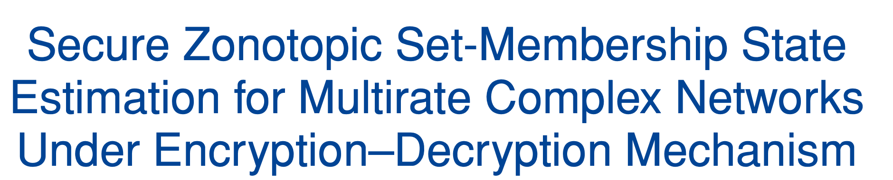
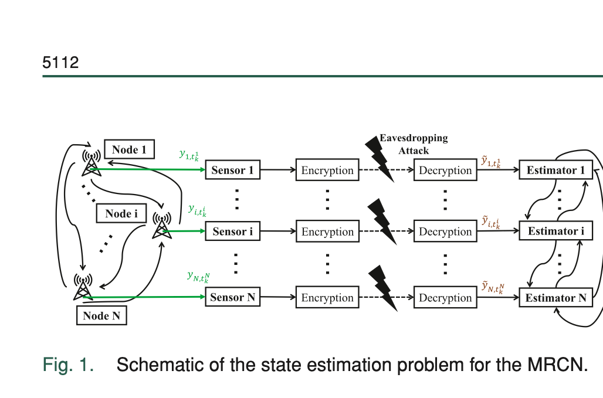
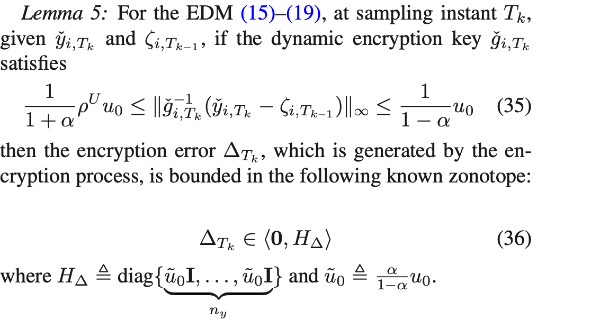
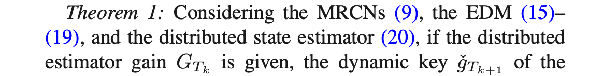
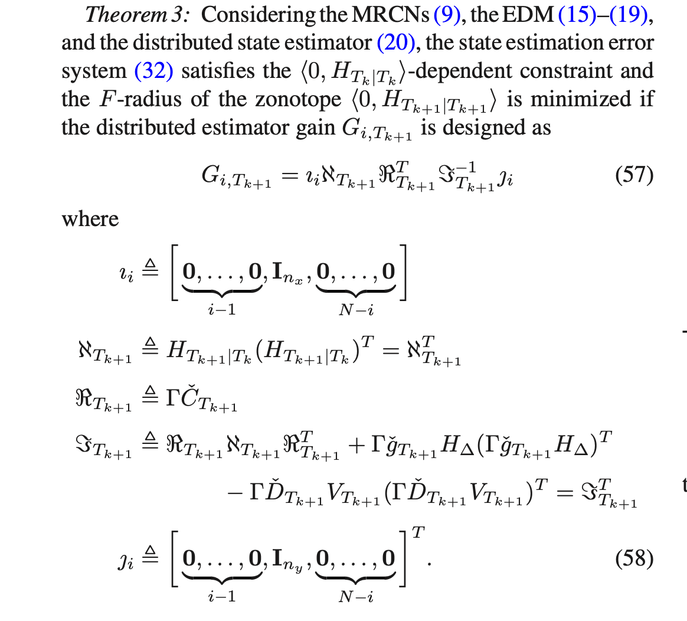
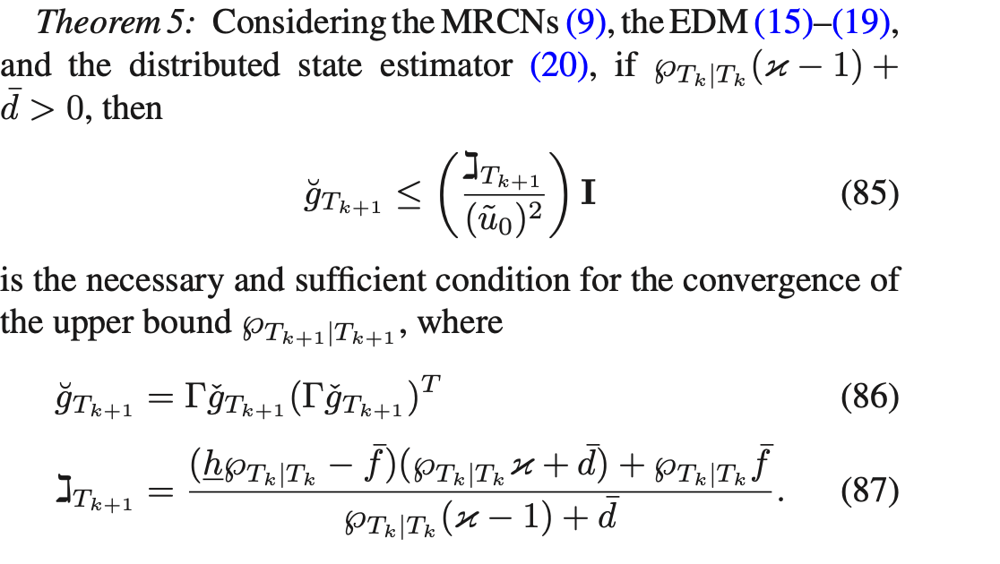
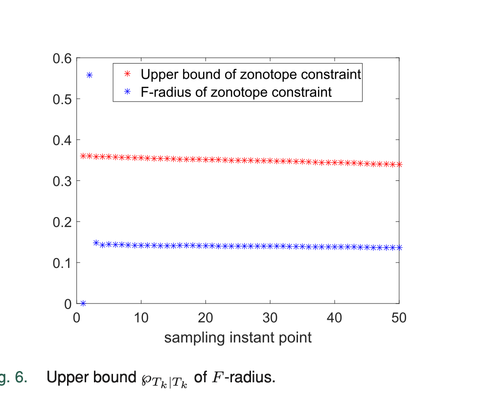
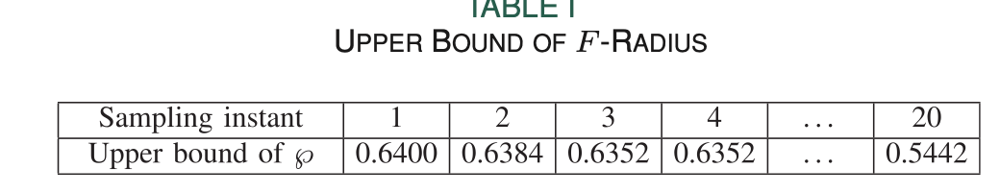
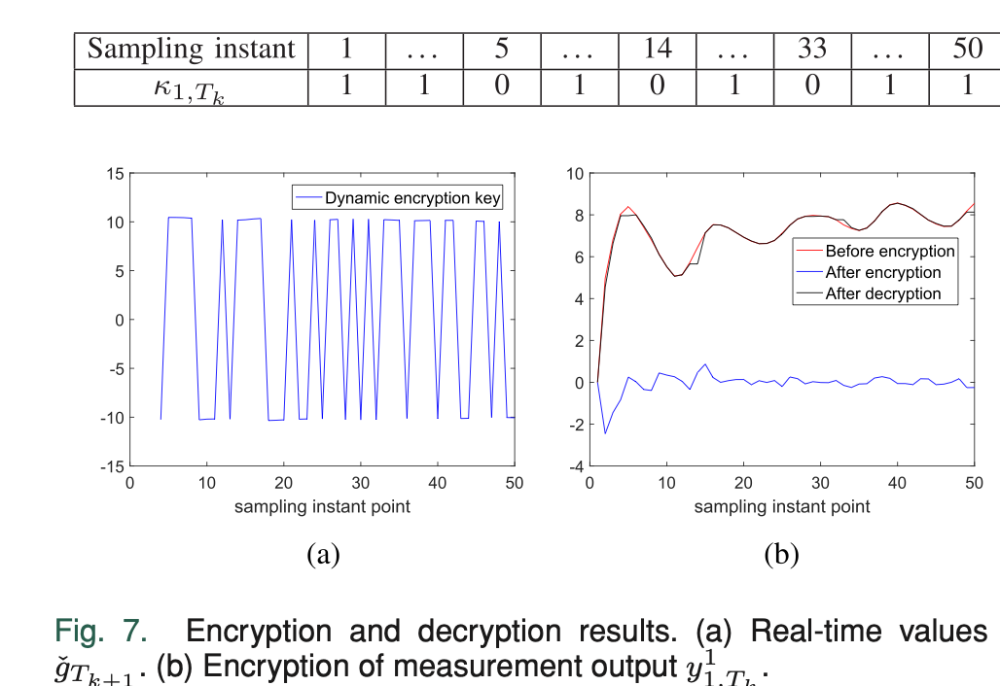
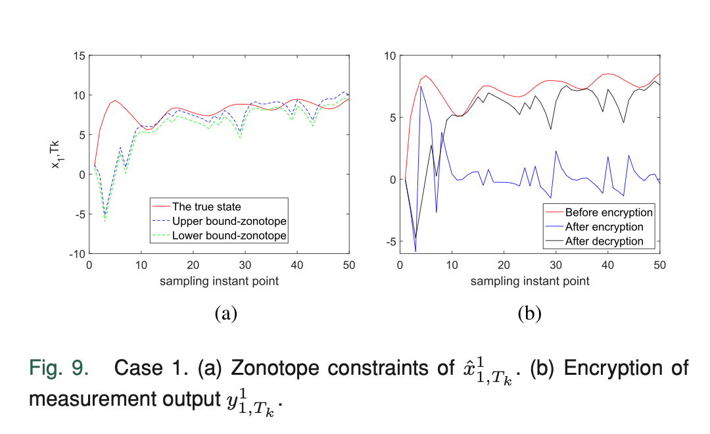

加密-解密机制下多速率复杂网络的安全Zonotope集员状态估计

- 关键词：加密-解密机制；多速率复杂网络；非线性系统；Zonotope；集员状态估计
- DOI / 论文链接：https://doi.org/10.1109/TAC.2023.3347599
1. 研究背景、问题定义与核心思路
1.1 研究动机与关键挑战
这篇文章处理的是一个很典型但又很难同时兼顾的组合问题：对象是非线性多速率复杂网络，噪声是unknown but bounded而不是高斯统计噪声，估计目标不是给出单点最优值，而是给出一个100%包含真实状态的集合约束。作者选择 zonotope 作为几何载体，是因为它比椭球方法更适合大规模网络的递推和降阶。
真正使问题变难的，不只是多节点耦合和非线性项，而是作者又叠加了一个加密-解密机制。一旦传感器到远端估计器之间的信号要经过加密、量化、丢包和解密，那么估计误差里就不再只有过程噪声、测量噪声和线性化误差，还会多出一类与密钥设计直接相关的加密误差。因此，这篇文章的核心问题不是单纯“如何做 zonotopic estimation”，而是：
- 如何把多速率采样统一到一个可递推的估计框架里。
- 如何把非线性项、噪声项和加密误差同时装进 zonotope 约束。
- 如何设计估计器增益，使误差 zonotope 的 F-radius 尽量小。
- 如何反过来给动态加密密钥制定规则，使安全机制不会破坏估计收敛。
1.2 方法框架与核心思路
作者先把节点状态和传感器输出写成多速率复杂网络模型，再通过伪测量把不同采样率的输出同步到统一时刻，随后在传感器侧施加 EDM，在估计器侧用分布式更新律进行校正。其基础系统模型可以概括为
为了处理多速率采样，作者引入同步后的伪测量
在此基础上，EDM 的核心步骤是先加密再解密：
估计器再利用所有邻居的解密输出进行分布式校正：
方法主线可以概括为：先用 zonotope 处理过程噪声、测量噪声和 Lagrange 余项，再把量化导致的加密误差也写成已知 zonotope，接着递推构造误差集合，之后用 F-radius 最小化得到估计器增益，最后再从上界收敛条件反推出动态密钥的设计规则。这使“估计性能”和“通信保密”第一次被放进同一个 zonotopic 递推链条里。
1.3 主要创新点
- 创新点 1：把多速率复杂网络、非线性项与加密-解密过程统一到同一个 zonotope 递推框架里，而不是先做估计再额外讨论安全机制。
- 创新点 2：利用 zonotope 约束对 Lagrange 余项做了可递推近似，使非线性误差可以进入显式的误差集合传播公式。
- 创新点 3：不仅给出误差 zonotope 的递推式，还通过 F-radius 最小化显式求出分布式估计器增益。
- 创新点 4：不是把密钥设计当作独立通信问题，而是直接从误差上界收敛条件推出动态密钥的设计规则，使安全机制与估计收敛性发生耦合。
2. 核心方法与技术主线解析
2.1 整体技术路线
从证明结构上看，这篇文章的核心链条非常清楚：
- 先建立多速率网络模型、伪测量同步机制和 EDM。
- 再证明量化引入的加密误差可以被一个已知 zonotope 约束。
- 然后把预测误差和校正误差分别装进新的 zonotope 递推关系。
- 接着通过最小化 F-radius 得到最优分布式估计器增益。
- 最后再研究 F-radius 上界的收敛条件，并由此反推出动态密钥设计规则。
其中，非线性项的关键处理是把
即把难处理的非线性差值拆成线性主项和余项。余项再借助 Hessian 上界、zonotope 表示和中点-半径分解进入误差传播链条。于是，误差系统可以被组织成“线性传播 + 非线性余项 + 噪声项 + 加密误差项”的统一形式，这就是后续各个定理成立的真正基础。
2.2 关键技术块解析
系统模型、伪测量和 EDM 是整篇文章的起点。作者不是直接在原始不等采样输出上做估计，而是先把测量同步，再把加密与解密过程写进系统层。这样做的价值在于：后续误差系统里新增的加密误差项不是凭空出现，而是来源可追踪、可定界。

上面这块内容的关键不在公式数量，而在“建模闭环”是否完整。文章把多速率、量化、丢包、动态密钥和分布式校正都放进了统一的状态估计问题里，因此后面所有关于收敛、上界和密钥规则的结论，都不是孤立通信分析，而是直接服务于状态估计本身。
Lemma 5 是后续所有安全相关结论的门槛条件。它证明：只要动态密钥满足一个有效量化区间条件，那么由加密过程引入的误差 $\Delta_{T_k}$ 就可以被束缚在已知 zonotope $\langle 0, H_{\Delta}\rangle$ 内。

这一步非常关键，因为如果加密误差只能“存在”而不能“定界”，那么它就无法并入 zonotope 递推。作者实际上是在这里完成了从“安全机制”到“集合估计对象”的转换。换句话说，Lemma 5 把通信侧的量化加密误差，翻译成了估计理论里可以计算的集合扰动。
Theorem 1 进一步把预测误差和校正误差都包进新的 zonotope 里。其核心结论不是某个数值收敛，而是给出两个显式生成矩阵 $H_{T_{k+1}\mid T_k}$ 和 $H_{T_{k+1}\mid T_{k+1}}$，说明误差集合如何一步步传播。

这一层的意义在于，作者把误差传播拆成三类来源：系统传播项、非线性余项项、噪声/加密项。于是后续任何优化或收敛讨论，都可以落到这些生成矩阵上。它奠定了“分布式估计 + EDM + 非线性余项”可以统一递推的数学基础。
Theorem 3 则回答了“有了误差 zonotope 之后，怎样把它做小”这个问题。作者把目标写成最小化 $\lVert H_{T_{k+1}\mid T_{k+1}}\rVert_F^2$，从而得到分布式估计器增益的显式结构。

这一步是工程可用性的关键。许多集合估计工作只能说明“存在一个集合约束”，但这篇文章更进一步，把估计器增益与集合尺寸优化直接挂钩。这里的 F-radius 不是附属指标，而是连接“集合大小”“估计性能”和“后续密钥设计”的桥梁。
Theorem 5 则把上界分析推到最终的安全设计规则上。作者先在 Theorem 4 中构造 F-radius 上界的标量递推，再在 Theorem 5 中给出该上界收敛的充要条件，最终得到对 $\breve g_{T_k}$ 的设计约束。

这一块的真正价值在于：密钥不是随便加大扰动强度就越安全。若密钥设计破坏了误差上界收敛，那么估计器虽然“更难被窃听”，却会失去可用性。作者因此得到一个更平衡的结论：动态密钥必须落在由系统参数、噪声上界和 F-radius 递推共同决定的可行区间内，安全性和估计性能必须联合设计。
3. 仿真结果与对比分析
3.1 仿真设置与对比对象
算例部分采用一个三节点 nonlinear MRCN，状态维度和输出维度都不高，但已经包含了多速率采样、节点耦合、UBB 过程/测量噪声、Markov 丢包以及 EDM。文中设置了 $u_0 = 2.5$、$\rho = 0.7$、$U = 20$，并令一个节点显式经历丢包，从而检验估计器与密钥规则在实际传输不完美条件下是否仍然有效。
对比对象并不是传统“本文方法 vs 基线方法”的横向算法对比，而是三类更有针对性的验证：
- 本文估计器是否真的给出包含真实状态的 zonotope 约束。
- F-radius 上界在设计规则下是否收敛。
- 当窃听者掌握不同程度先验信息时，EDM 是否仍能保护数据隐私。
3.2 主要结果与对比说明
首先，Fig. 3 展示了状态分量 $x_{1,T_k}$ 的 zonotopic estimation 结果。图里最重要的信息不是曲线是否“贴合”，而是估计得到的 zonotope 约束能否持续包住真实状态轨迹。

从论文文字说明可知，Figs. 3--5 共同表明所设计的估计器确实能稳定生成包含真实状态的集合约束。这说明作者前面构造的误差 zonotope 递推不是形式化推导，而是落到了可观察的状态包络结果上。
Fig. 6 与 Table I 进一步检验的是 F-radius 上界。这里的看点不只是“上界下降了”，而是文中同时指出真实误差 zonotope 的 F-radius 始终小于该上界，因此这个上界不是完全松散的理论摆设，而是一个对实际估计尺寸有解释力的安全边界。


这组证据支持了 Theorem 4 和 Theorem 5 的理论目标：只要密钥满足设计规则，上界就能保持收敛，进而说明 EDM 没有把估计问题推向发散。
Fig. 7 直接验证了加密-解密机制本身。子图 (a) 反映动态密钥的实时变化，子图 (b) 则对比了加密前后的测量输出。

这一结果证明了两个层面的结论：其一，加密后的数据形态已经明显偏离原始测量，说明窃听者不能直接读取有效信号；其二，合法接收端经过解密后仍可重构出可用于估计的测量信息，说明保密性并没有以牺牲可恢复性为代价。
Fig. 9 是本文安全性论证里最有说服力的一组结果之一。它对应的是“窃听者知道系统动力学、估计器和噪声参数，但不知道 EDM 存在”的情形。作者展示了此时窃听者无法获得有效状态估计结果。

这说明 EDM 的价值不只是让信号“看起来更乱”，而是实质性破坏了窃听者对状态的可重构性。结合文中对 Case 2 和 Case 3 的讨论，可以看出真正决定安全边界的，不只是是否知道加密原理，而是是否掌握了设计密钥所需的预设参数与具体规则。
4. 后续研究方向
- 初级想法标题：面向DoS扰动的轻量级EDM-Zonotope联合估计扩展 核心想法：适合研一或研二学生作为入门课题，在本文框架中保留 zonotope 递推与动态密钥设计，只额外加入简单的 DoS 攻击指示变量或丢包持续时长模型，先研究“间歇性不可达测量”下误差 zonotope 是否仍可递推，再做仿真比较 F-radius 上界与恢复时间。这个方向改动点集中、上手快、低门槛，适合硕士阶段快速形成一篇方法改进型工作。数学推导难度：中
- 高级想法标题：面向博士生的分布式协同密钥-控制-估计一体化设计 核心想法：适合博士生深入推进，把本文的“密钥设计保证估计收敛”进一步提升为“密钥、估计器、控制器联合优化”，例如在输出反馈控制或事件触发控制闭环下，同时约束控制性能、通信代价与安全性。这样会引入更强的耦合项、更长的定理链以及更高难度的矩阵不等式或集合递推分析，属于明显更高阶、更深入的研究主题。数学推导难度：很高
- 指导想法标题：教授视角下的安全集合估计研究梯度与学生培养路径 核心想法：面向教授或导师的指导方案应把课题拆成三个梯度：先让研究生复现本文的 zonotope 递推、F-radius 上界与仿真平台；再分工推进 DoS、欺骗攻击、异步通信或控制闭环等单一扩展；最后把多个扩展收束成统一理论框架。指导时应强调先证明最小可行命题，再逐步加复杂机制，避免研究生一开始就堆叠多种攻击与多目标优化而失控。课题组层面可按“理论证明、算法实现、实验复现”分工推进，并根据成熟度安排会议论文到期刊论文的投稿节奏。数学推导难度：高
5. 总结与评价
这篇文章的价值，不在于单独提出了一个加密方法，也不在于单独做了一个 zonotopic estimator，而在于把安全通信机制、非线性多速率网络建模与集合估计递推真正耦合到了同一个理论框架里。其主线是完整的：先证明加密误差可定界，再证明误差集合可递推，再最小化 F-radius，最后反推出密钥设计规则。
从研究质量看，文章最扎实的地方是逻辑闭环比较完整，理论与仿真之间的对应关系也比较明确。相对保守的地方是实验仍以 illustrative example 为主，系统规模、攻击类型和比较基线都可以继续增强。即便如此，这篇文章已经为“安全机制不只是附加模块，而是估计理论内部变量”这个方向打下了较清晰的基础。